Tutorial · Advanced
Tutorial: advanced features
Short recipes for what the Nix and container tutorials leave out, each in the terminal and in the desktop app. They use the Nix tutorial's runs and install.
The runs
$ rewind check --epoch 1790985600 github:fzakaria/rewindvm#mylib | grep -E 'ends differently|limited to|decides it|passing:|failing:|same run until|open both'
rewind: packing 62 store paths for mylib-0.3.0
schedule 1 ends differently from schedule 0; finding the step that decides it
schedule 1 limited to steps 4533..4759 still ends differently
step 4758 decides it: a request to switch threads and a 640 µs pause of the running thread there makes the run fail
passing: run bcdb4788ffc5bce2, schedule 1 over steps 4533..4758
failing: run 455a57d2ee648d59, schedule 1 over steps 4533..4759
the two are the same run until step 4758
open both in the desktop app: rewind open 455a57d2ee648d59 4770 --compare bcdb4788ffc5bce2The failing run crashes at step 4782.
Find the line a thread was on
rewind where names the line of the program's own code a thread was on at a
step, skipping the C library and, in Rust, the standard library and dependencies. By
default it picks the thread of the step's event; at 4782 that is the worker that
segfaulted:
$ rewind where 455a57d2 4782
rewind: process 166 at step 4782; loading symbols for 4 of its files
rewind: fetched 3 source files from the VM
rewind: walking thread 171's stack in gdb
rewind: downloading debug info for libc.so.6; first time only
rewind: downloading debug info for libpthread.so.0; first time only
rewind: downloading debug info for ld-linux-x86-64.so.2; first time only
rewind: downloading source files of libc.so.6; each one only once
process 166 (test_pool_shutdown), thread 171, at step 4782
#0 worker (src/pool.c:77)
75 printf("job %d done: %ld\n", job, result & 0xffff);
76 fflush(stdout);
> 77 p->queue->completed++;
78 }
79 }
arguments:
arg = 0x55c074530010
locals:
q = <optimized out>
job = 16
result = 4092430570737637218
p = 0x55c074530010
called from #1 start_thread (pthread_create.c:454)
called from #2 __GI___clone3 (../sysdeps/unix/sysv/linux/x86_64/clone3.S:78)
Under the source come the frame's arguments and locals, as gdb's
info args and info locals print them: the worker had just
reported job 16.
--tid picks another thread, on the CPU or not. At step 4782, where the worker
faults, the main thread is waiting to join the workers:
$ rewind where 455a57d2 4782 --tid 166
rewind: process 166 at step 4782; loading symbols for 4 of its files
rewind: read 3 source files fetched from the VM earlier
rewind: walking thread 166's stack in gdb
rewind: downloading source files of libc.so.6; each one only once
process 166 (test_pool_shutdown), thread 166, at step 4782
#7 pool_shutdown (src/pool.c:128)
126
127 for (int i = 0; i < POOL_WORKERS; i++)
> 128 pthread_join(p->workers[i], NULL);
129 pthread_cond_destroy(&p->ready);
130 pthread_mutex_destroy(&p->lock);
arguments:
p = 0x55c074530010
locals:
i = 0
called from #8 main (tests/test_pool_shutdown.c:24)
called from #9 __libc_start_call_main (../sysdeps/nptl/libc_start_call_main.h:59)
--json prints every frame, with its arguments and locals, where each is and
which one was chosen. For every frame of every thread, ask gdb for all the stacks of the
process:
$ rewind gdb 455a57d2 4782 --pid 166 -- -batch -ex 'thread apply all bt' 2>/dev/null | grep -E '^Thread|src/|tests/'
#0 0x000055c06fa1d437 in worker (arg=0x55c074530010) at src/pool.c:77
Thread 3 (Thread 1.171 (test_pool_shutd, on the CPU)):
#0 0x000055c06fa1d437 in worker (arg=0x55c074530010) at src/pool.c:77
Thread 2 (Thread 1.166 (test_pool_shutd)):
#7 0x000055c06fa1d5b3 in pool_shutdown (p=p@entry=0x55c074530010) at src/pool.c:128
#8 0x000055c06fa1d272 in main () at tests/test_pool_shutdown.c:24
Thread 1 (Thread 1.4194305 (the CPU, in test_pool_shutd 171)):
rewind gdb starts in the thread rewind where looks at, in its
innermost frame. --tid and --frame start it elsewhere, with
frames numbered as where --json numbers them. In the main thread's frame that
where chose, pool_shutdown has already set the queue to NULL:
$ rewind gdb 455a57d2 4782 --tid 166 --frame 7 -- -batch -ex 'p p->queue'
rewind: process 166 at step 4782; loading symbols for 4 of its files
rewind: read 3 source files fetched from the VM earlier
rewind: gdb at step 4782 of 455a57d2ee648d59
arch_local_irq_restore (flags=6) at ./arch/x86/include/asm/irqflags.h:146
146 return !(flags & X86_EFLAGS_IF);
[Switching to thread 2 (Thread 1.166)]
#0 __syscall_cancel_arch () at ../sysdeps/unix/sysv/linux/x86_64/syscall_cancel.S:56
56 ret
#7 0x000055c06fa1d5b3 in pool_shutdown (p=p@entry=0x55c074530010) at src/pool.c:128
128 pthread_join(p->workers[i], NULL);
$1 = (struct queue *) 0x0
[Inferior 1 (process 1) detached]
where and gdb read each thread's registers from the VM kernel's task list, so
they work on runs recorded with a guest that lists its tasks, as these were.
In the app, the s key opens the source panel at the line rewind where names,
with the frame's variables and the thread's frames below it; click a frame to see its line
and variables instead. The panel follows the playhead, and each new step takes a few
seconds since it forks the run.
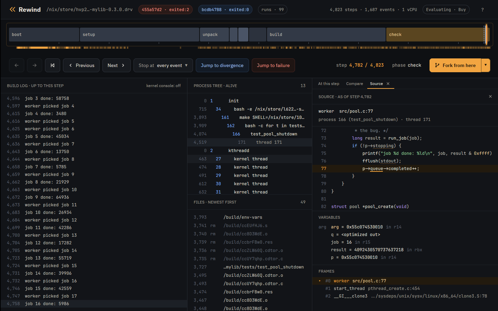
Find who wrote a value
The worker crashed because p->queue was NULL.
rewind blame finds the write that put a value there. Give it a step and an
expression. It works out the expression's address in the thread that
where picks. Then it replays the stretch of the run before the step, with
that address in the CPU's debug registers. If the stretch holds no write, it tries the
stretch before that:
$ rewind blame 455a57d2 --at 4782 'p->queue'
rewind: process 166 at step 4782; loading symbols for 4 of its files
rewind: read 3 source files fetched from the VM earlier
rewind: walking thread 171's stack in gdb
p->queue = 0x0 8 bytes at 0x55c074530068, thread 171, pool.c:77
last written at step 4767 by thread 166 (test_pool_shutd)
pool.c:125 pool_shutdown p->queue = NULL;
was 0x55c074530090
other threads just after the write, in step 4767:
thread 171 pool.c:75 worker __syscall_cancel_arch
thread 172 pool.c:45 run_job __syscall_cancel_arch
searched back to step 4076, 1 keyframe window, 1 write, 0.7s
The main thread set p->queue to NULL on line 125, in
pool_shutdown. It did so at step 4767, 15 steps before the crash. blame also
prints the value before the write.
The last part shows where the other threads were just after the write. Thread 171 is the
worker that crashes later. It was on line 75, printing. It had already passed the check of
p->stopping on line 74.
A step runs from one exit of the VM to the next, so a step can cover many lines of the
program. At the start of step 4767, the main thread had not yet called
pool_shutdown. rewind where --after-write looks just after the
write itself, with the address and size blame printed:
$ rewind where 455a57d2 4767 --tid 166 --after-write 0x55c074530068 --size 8
rewind: process 166 at step 4767; loading symbols for 4 of its files
rewind: read 3 source files fetched from the VM earlier
rewind: walking thread 166's stack in gdb
process 166 (test_pool_shutdown), thread 166, at step 4767, just after its write of the 8 bytes at 0x55c074530068
#0 pool_shutdown (src/pool.c:125)
123 /* The bug: the queue goes before the workers are joined. */
124 free(p->queue);
> 125 p->queue = NULL;
126
127 for (int i = 0; i < POOL_WORKERS; i++)
arguments:
p = 0x55c074530010
locals:
i = 0
called from #1 main (tests/test_pool_shutdown.c:24)
called from #2 __libc_start_call_main (../sysdeps/nptl/libc_start_call_main.h:59)
--writes 2 goes back one more write. Here that is the calloc in
pool_create.
blame can only watch values in memory. gdb keeps some values in registers, such as
job here. For those, blame says it cannot watch them and lists the values on
the same line that it can watch.
--reads lists the reads as well as the writes. It takes several expressions
at once. It searches back to the start of the process, or to the step given with
--since. Here it searches the last 40 steps. The output below keeps only
lines 74 and 77 of the worker and lines 119 and 125 of pool_shutdown:
$ rewind blame 455a57d2 --at 4782 'p->stopping' 'p->queue' --reads --since 4742
...
step thread access value where
...
4745 172 test_pool_shutd read 0 pool.c:74 worker if (!p->stopping) { p->stopping
4746 172 test_pool_shutd read 0x55c074530090 pool.c:77 worker p->queue->completed++; p->queue
...
4757 171 test_pool_shutd read 0 pool.c:74 worker if (!p->stopping) { p->stopping
...
4767 166 test_pool_shutd write 1 pool.c:119 pool_shutdown p->stopping = 1; p->stopping
...
4767 166 test_pool_shutd write 0x0 pool.c:125 pool_shutdown p->queue = NULL; p->queue
4768 172 test_pool_shutd read 1 pool.c:74 worker if (!p->stopping) { p->stopping
...
4779 171 test_pool_shutd read 0x0 pool.c:77 worker p->queue->completed++; p->queue
...
searched back to step 4742, 2 keyframe windows, 2 writes, 11 reads, 0.8sRead in order, the rows show the race:
1. Thread 171 reads p->stopping as 0 on line 74. So it goes on to count
its job. 2. The main thread sets p->stopping to 1, then sets
p->queue to NULL. 3. Thread 171 reads p->queue on line 77
and gets NULL.
The worker does not hold the lock between line 74 and line 77. Nothing stops the main thread from running in between.
In the app, the source panel underlines each value that blame can watch. Hover over a value to see where it is kept, or why blame cannot watch it. Click it to search. You can keep using the app while the search runs. The popover counts the steps searched so far, and the timeline marks the stretch being searched.
The answer names the write, the value before it, and where the other threads were. Click the write, or the button, to see the writer just after the write; click another thread to see it at that moment. The other buttons show the reads with one lane per thread, or blame the write before this one. The popover moves by its top line. At the step where the run failed, the panel starts searching for the failing line's values before you click.
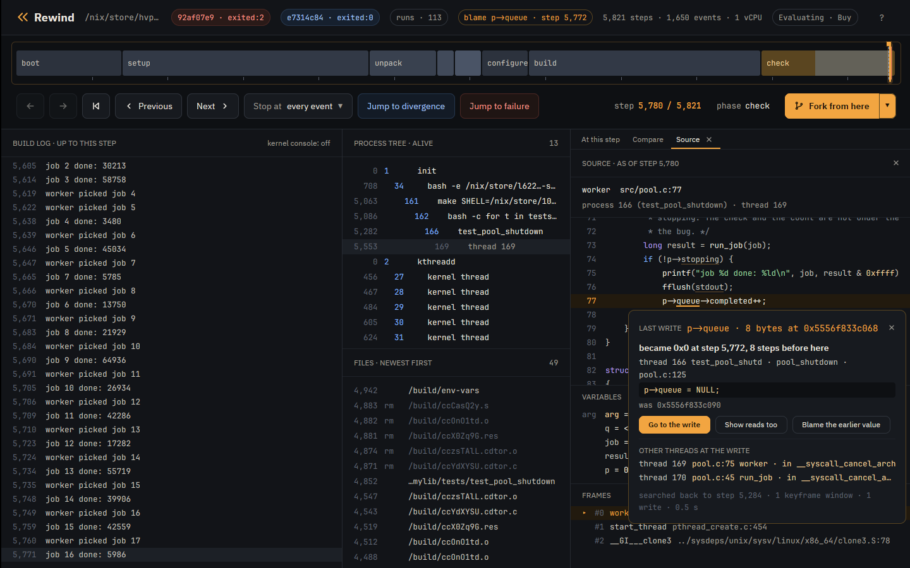
Find the step that decides it
check names step 4758 as the one that decides it. Its passing run is the same
schedule without that step, so the two runs are the same machine until 4758, where only
the failing run gets a request to switch threads and a 640 µs pause of the running thread,
and everything they do differently follows from it. rewind where names the
thread that was on the CPU there:
$ rewind where 455a57d2 4758
rewind: process 166 at step 4758; loading symbols for 4 of its files
rewind: read 3 source files fetched from the VM earlier
rewind: walking thread 171's stack in gdb
process 166 (test_pool_shutdown), thread 171, at step 4758
#14 worker (src/pool.c:75)
73 long result = run_job(job);
74 if (!p->stopping) {
> 75 printf("job %d done: %ld\n", job, result & 0xffff);
76 fflush(stdout);
77 p->queue->completed++;
arguments:
arg = 0x55c074530010
locals:
q = <optimized out>
job = 16
result = 4092430570737637218
p = 0x55c074530010
called from #15 start_thread (pthread_create.c:454)
called from #16 __GI___clone3 (../sysdeps/unix/sysv/linux/x86_64/clone3.S:78)
A worker checks p->stopping without the lock, prints its job, and then
counts it through p->queue, which pool_shutdown frees. At
step 4758 the worker has made its check and is printing; a request to switch threads and a
640 µs pause of the running thread there holds it before the count. The test's main thread
runs meanwhile, sees half the jobs done, and shuts the pool down, setting the queue to
NULL, and the worker faults on it 24 steps later. Without that step's perturbation, the
worker counts first and the test passes.
check --where looks up both threads itself: the one on the CPU at the
deciding step, and the one at the failing run's first differing event. Each lookup forks
the run and starts gdb, so it is opt-in:
$ rewind check --where --epoch 1790985600 github:fzakaria/rewindvm#mylib 2>/dev/null | sed -n '/^where the threads were/,/first event that differs$/p'
where the threads were:
4758 166/171 worker (src/pool.c:75), on the CPU at the deciding step
4770 166/172 start_thread (pthread_create.c:623), at the first event that differs
The first event that differs is the other worker, thread 172, exiting: it is in
start_thread, glibc's code around a thread's function, on its way out. With
thread 171 held at the deciding step, the main thread shuts the pool down, nulling the
queue at step 4767. The other worker was in job 17's wait then, as blame showed; it finds
the pool stopping, skips the count, and returns. In the passing run thread 171 counts job
16 and picks job 18 before the shutdown, and the other worker exits after that, at step
4771. That is the cause showing up before the symptom: the held thread's fault at line 77,
which rewind where showed at the top of this page, comes 12 steps later, at
step 4782.
In the app, the deciding step is a dashed blue mark on the timeline, before the solid one where the runs' events first differ. Zoomed in around the crash:
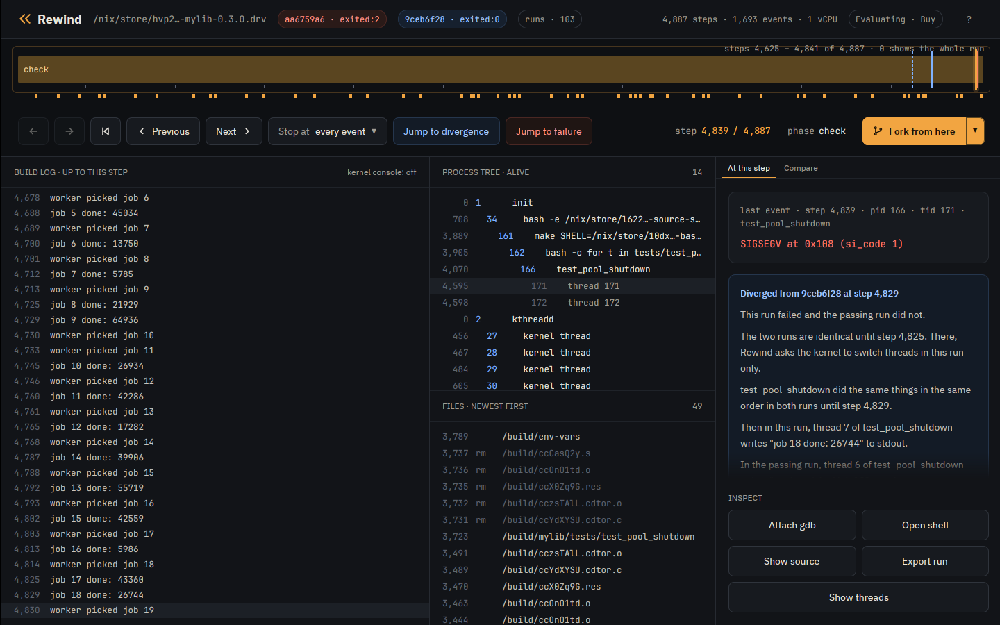
See which thread held the CPU
The VM has one CPU, so a race is an order of threads. Every context switch in the VM is a
step of its own, and rewind threads prints which thread held the CPU over a
window of steps, a line per stretch. Around the deciding step, in both runs:
$ rewind threads 455a57d2 --from 4749 --to 4782
4749 4756 idle swapper/0
4757 4759 166/171 test_pool_shutd
4760 4766 idle swapper/0
4767 4767 166/166 test_pool_shutd
4768 4770 166/172 test_pool_shutd
4771 4771 kernel 11 ksoftirqd/0
4772 4778 idle swapper/0
4779 4782 166/171 test_pool_shutd$ rewind threads bcdb4788 --from 4749 --to 4782
4749 4756 idle swapper/0
4757 4760 166/171 test_pool_shutd
4761 4767 idle swapper/0
4768 4768 166/166 test_pool_shutd
4769 4771 166/172 test_pool_shutd
4772 4772 kernel 11 ksoftirqd/0
4773 4775 166/171 test_pool_shutd
4776 4776 kernel 11 ksoftirqd/0
4777 4782 166/166 test_pool_shutdThe lines match up to step 4758. From there the threads take the CPU in another order, and in the failing run thread 171 holds it at the crash. Every switch is a step, so no stretch is too short to appear.
In the app, the t key opens the Threads tab: a lane per thread around where the two runs part, this run's above the compared run's, with a bar wherever the thread held the CPU. Ctrl and the wheel zoom the lanes and Shift and the wheel pan them. Clicking a bar moves the playhead there. The band under the timeline is darker where the switches are dense, which says where to look, and the Stop at menu offers the switches of the thread on the CPU at the playhead, so Next goes to where that thread took the CPU or lost it:
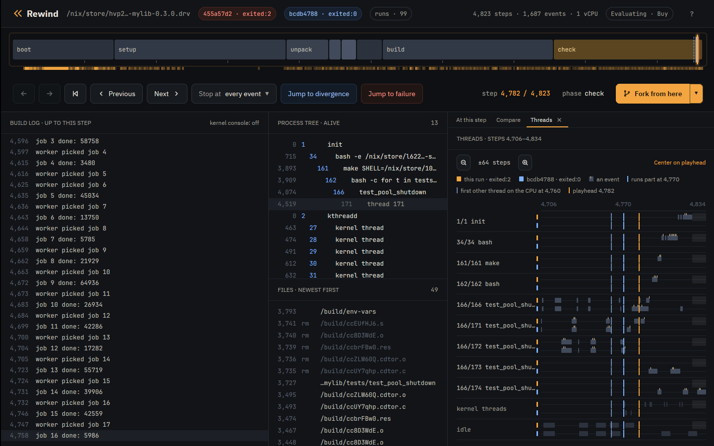
Watch both sides of the race
A watchpoint finds who freed the queue the crash reads. Break in a worker so
p is in scope, watch p->queue, and continue:
$ rewind gdb 455a57d2 4732 -- -batch -ex 'break src/pool.c:74' -ex continue -ex 'watch -l p->queue' -ex 'delete 1' -ex continue -ex 'bt 2' -ex 'break src/pool.c:77 if p->queue == 0' -ex continue -ex 'bt 1'
rewind: step 4732 ran in process 166; loading symbols for 4 of its files
rewind: read 3 source files fetched from the VM earlier
rewind: gdb at step 4732 of 455a57d2ee648d59
arch_local_irq_restore (flags=518) at ./arch/x86/include/asm/irqflags.h:146
146 return !(flags & X86_EFLAGS_IF);
[Switching to thread 3 (Thread 1.171)]
#0 __syscall_cancel_arch () at ../sysdeps/unix/sysv/linux/x86_64/syscall_cancel.S:56
56 ret
Breakpoint 1 at 0x55c06fa1d3a9: file src/pool.c, line 74.
[Switching to Thread 1.172]
Thread 4 hit Breakpoint 1, worker (arg=0x55c074530010) at src/pool.c:74
74 if (!p->stopping) {
Hardware watchpoint 2: -location p->queue
[Switching to Thread 1.166]
Thread 2 hit Hardware watchpoint 2: -location p->queue
Old value = (struct queue *) 0x55c074530090
New value = (struct queue *) 0x0
pool_shutdown (p=p@entry=0x55c074530010) at src/pool.c:128
128 pthread_join(p->workers[i], NULL);
#0 pool_shutdown (p=p@entry=0x55c074530010) at src/pool.c:128
#1 0x000055c06fa1d272 in main () at tests/test_pool_shutdown.c:24
Breakpoint 3 at 0x55c06fa1d433: file src/pool.c, line 77.
[Thread 1.172 exited]
[Switching to Thread 1.171]
Thread 3 hit Breakpoint 3, worker (arg=0x55c074530010) at src/pool.c:77
77 p->queue->completed++;
#0 worker (arg=0x55c074530010) at src/pool.c:77
[Inferior 1 (process 1) detached]
The first stop is main nulling the queue in pool_shutdown, the
second the worker reading it. Watchpoints are the CPU's four debug registers, so the VM
runs at full speed until one fires. watch and awatch work; x86
has no rwatch. At user addresses they stop only in the process gdb started
in.
In the app, Attach gdb opens the same session under the timeline:
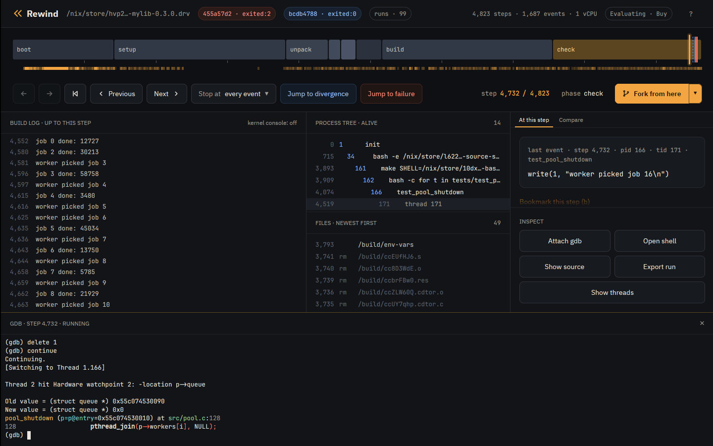
Run backwards to the write
gdb gives the same answer as blame and can go on from there: it can run the fork backwards. From the crash itself, watch the pointer the worker read and run back to the last write to it:
$ rewind gdb 455a57d2 4782 -- -batch -ex 'watch -l p->queue' -ex reverse-continue -ex 'bt 2'
rewind: step 4782 ran in process 166; loading symbols for 4 of its files
rewind: read 3 source files fetched from the VM earlier
rewind: gdb at step 4782 of 455a57d2ee648d59
arch_local_irq_restore (flags=6) at ./arch/x86/include/asm/irqflags.h:146
146 return !(flags & X86_EFLAGS_IF);
[Switching to thread 3 (Thread 1.171)]
#0 0x000055c06fa1d437 in worker (arg=0x55c074530010) at src/pool.c:77
77 p->queue->completed++;
Hardware watchpoint 1: -location p->queue
[New Thread 1.172]
[Switching to Thread 1.166]
Thread 2 hit Hardware watchpoint 1: -location p->queue
Old value = (struct queue *) 0x0
New value = (struct queue *) 0x55c074530090
pool_shutdown (p=p@entry=0x55c074530010) at src/pool.c:125
125 p->queue = NULL;
#0 pool_shutdown (p=p@entry=0x55c074530010) at src/pool.c:125
#1 0x000055c06fa1d272 in main () at tests/test_pool_shutdown.c:24
[Inferior 1 (process 1) detached]
The fork stops before main nulls the queue in pool_shutdown.
Going back, gdb shows the values swapped: the old value is the one after the write.
reverse-stepi, reverse-next, reverse-finish and
reverse-continue to a breakpoint work too. Rewind replays the run from the
step's start to go back, so a step back takes a moment, and longer under exit time, which
single-steps the way. A fork whose memory or registers gdb changed cannot go back.
Follow the fault into the kernel
rewind gdb has the VM kernel's symbols too. Stop where the kernel sends the
SIGSEGV, and use its own gdb scripts:
$ rewind gdb 455a57d2 4758 -- -batch -ex 'break force_sig_fault' -ex continue -ex 'bt 4' -ex 'pipe lx-ps | tail -4' -ex 'pipe lx-dmesg | tail -2'
rewind: step 4758 ran in process 166; loading symbols for 4 of its files
rewind: read 3 source files fetched from the VM earlier
rewind: gdb at step 4758 of 455a57d2ee648d59
arch_local_irq_restore (flags=518) at ./arch/x86/include/asm/irqflags.h:146
146 return !(flags & X86_EFLAGS_IF);
[Switching to thread 3 (Thread 1.171)]
#0 __syscall_cancel_arch () at ../sysdeps/unix/sysv/linux/x86_64/syscall_cancel.S:56
56 ret
Downloading 133.41 K source file /build/linux-7.2.8/kernel/signal.c...
Breakpoint 1 at 0xffffffff812c39b0: file kernel/signal.c, line 1757.
[Thread 1.172 exited]
[Switching to Thread 1.4194305]
Thread 1 hit Breakpoint 1, force_sig_fault (sig=11, code=1, addr=0x108) at kernel/signal.c:1757
1757 {
#0 force_sig_fault (sig=11, code=1, addr=0x108) at kernel/signal.c:1757
#1 0xffffffff81e70710 in handle_page_fault (regs=0xffffc900001dbf58, error_code=6, address=264) at arch/x86/mm/fault.c:1483
#2 exc_page_fault (regs=0xffffc900001dbf58, error_code=6) at arch/x86/mm/fault.c:1536
#3 0xffffffff810012a6 in asm_exc_page_fault () at ./arch/x86/include/asm/idtentry.h:595
0xffff888003810fc0 161 make
0xffff888003bfde80 162 bash
0xffff888003bfcec0 166 test_pool_shutd
0xffff888003811f80 171 test_pool_shutd
[ 0.199341] test_pool_shutd[171]: segfault at 108 ip 000055c06fa1d437 sp 00007fda39950e10 error 6 in test_pool_shutdown[1437,55c06fa1d000+1000] likely on CPU 0 (core 0, socket 0)
[ 0.199346] Code: fa 48 8d 35 2a 0c 00 00 bf 02 00 00 00 b8 00 00 00 00 e8 ac fc ff ff 48 8b 05 b5 2b 00 00 48 8b 38 e8 8d fc ff ff 49 8b 46 58 <83> 80 08 01 00 00 01 e9 b5 fe ff ff 55 48 89 e5 41 54 53 be 78 00
[Inferior 1 (process 1) detached]
The kernel's DWARF comes from rewindvm.cachix.org with Nix, and from the
debug tarball next to rewind without. The app's build log shows the kernel's
messages beside the program's with kernel console on:
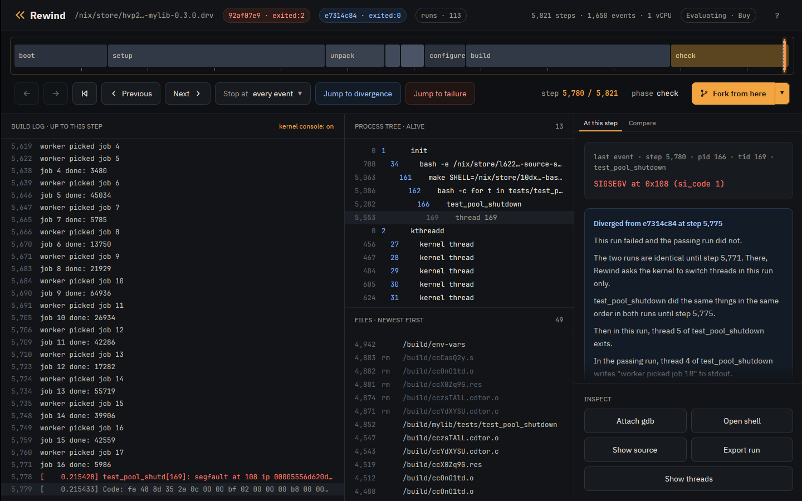
Use your own gdb
--listen serves the fork for a gdb started elsewhere, such as an IDE's, and
prints the command line that loads the same symbols:
$ rewind gdb 455a57d2 4782 --listen 127.0.0.1:1234
rewind: step 4782 ran in process 166; loading symbols for 4 of its files
rewind: read 3 source files fetched from the VM earlier
rewind: gdb at step 4782 of 455a57d2ee648d59; connect with: gdb -q -iex 'add-auto-load-safe-path /nix/store/h4wfwic161kxrr74jlzla5lsm28hgary-glibc-2.44-25' -iex 'set debuginfod enabled on' -iex 'set debuginfod urls http://127.0.0. ...Bring tools into the VM
rewind shell --with adds a Nix package to the shell, without changing the
run. Here binutils disassembles the faulting instruction:
$ printf 'objdump -d --no-show-raw-insn --start-address=0x142c --stop-address=0x143e tests/test_pool_shutdown | tail -4; exit\n' | rewind shell 455a57d2 4782 --pid 166 --with nixpkgs#binutils
rewind: packing 21 store paths for --with
rewind: a shell at step 4782 of 455a57d2ee648d59; exit it to leave
[rewind] /build/mylib # objdump -d --no-show-raw-insn --start-address=0x142c --stop-address=0x143e tests/test_pool_shutdown | tail -4; exit
142c: mov (%rax),%edi
142e: call 10c0 <fflush@plt>
1433: mov 0x58(%r14),%rax
1437: addl $0x1,0x108(%rax)In the app, Open shell starts a shell at the playhead in the terminal pane, in the crashing process's working directory:
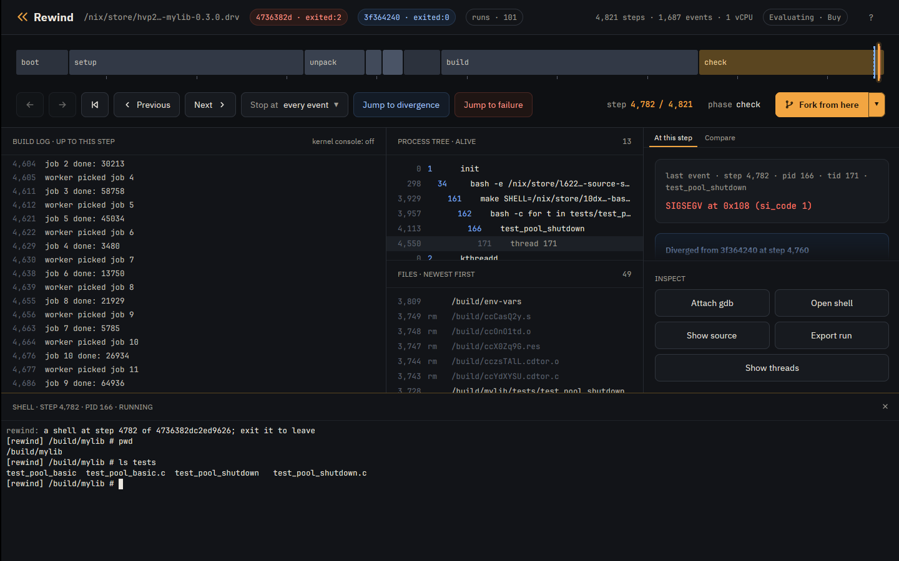
Give programs more CPUs
The VM has one vCPU, so by default programs see one CPU and Nix builds run one job at a
time. --cores tells them there are more, and the extra threads interleave on
the one vCPU:
$ rewind nix --cores 4 --epoch 1790985600 github:fzakaria/rewindvm#mylib
...
rewind: run 26d37b36dacd068f exited:0 after 6043 steps, 0.215s virtual, 0.494s wall (poweroff)
/nix/store/f6a9gy362szw6nxx3ikrklr8glr6rdln-mylib-0.3.0 a9d703ba89774f3d matches your store, rewindvm.cachix.org$ printf 'nproc; echo $NIX_BUILD_CORES; exit\n' | rewind shell 26d37b36 2686 --pid 110
rewind: a shell at step 2686 of 26d37b36dacd068f; exit it to leave
[rewind] /build/mylib # nproc; echo $NIX_BUILD_CORES; exit
4
4
Go programs see the extra CPUs too, and Go's garbage collector can then spin waiting for a
thread that never runs. Run them with GOGC=off if they fit in the VM's
memory.
Steer the perturbation
check --schedules N tries more or fewer schedules, --all all of
them. rewind fork asks which schedules fail from a given step:
$ rewind fork 455a57d2 4682 --schedule 1 --quiet
rewind: run 506727344a509ca5 exited:2 after 4838 steps, 0.200s virtual, 0.118s wall (poweroff)
rewind: the fork first differs from its parent at step 4780
rewind: open it beside its parent in the desktop app: rewind open 506727344a509ca5 4780 --compare 455a57d2ee648d59
$ rewind fork 455a57d2 4682 --schedule 2 --quiet
rewind: run cde108b86a46417a exited:0 after 6517 steps, 0.220s virtual, 0.154s wall (poweroff)
rewind: the fork first differs from its parent at step 4715
rewind: open it beside its parent in the desktop app: rewind open cde108b86a46417a 4715 --compare 455a57d2ee648d59
$ rewind fork 455a57d2 4682 --schedule 3 --quiet
rewind: run a45917fe369b66a1 exited:2 after 5160 steps, 0.204s virtual, 0.086s wall (poweroff)
rewind: the fork first differs from its parent at step 4717
rewind: open it beside its parent in the desktop app: rewind open a45917fe369b66a1 4717 --compare 455a57d2ee648d59
$ rewind fork 455a57d2 4682 --schedule 4 --quiet
rewind: run 0a4ce7364cefcfb8 exited:0 after 6510 steps, 0.220s virtual, 0.167s wall (poweroff)
rewind: the fork first differs from its parent at step 4695
rewind: open it beside its parent in the desktop app: rewind open 0a4ce7364cefcfb8 4695 --compare 455a57d2ee648d59The app's Runs tab, or the runs pill in its header, shows every run of the build, with forks under the run and step they branched from:
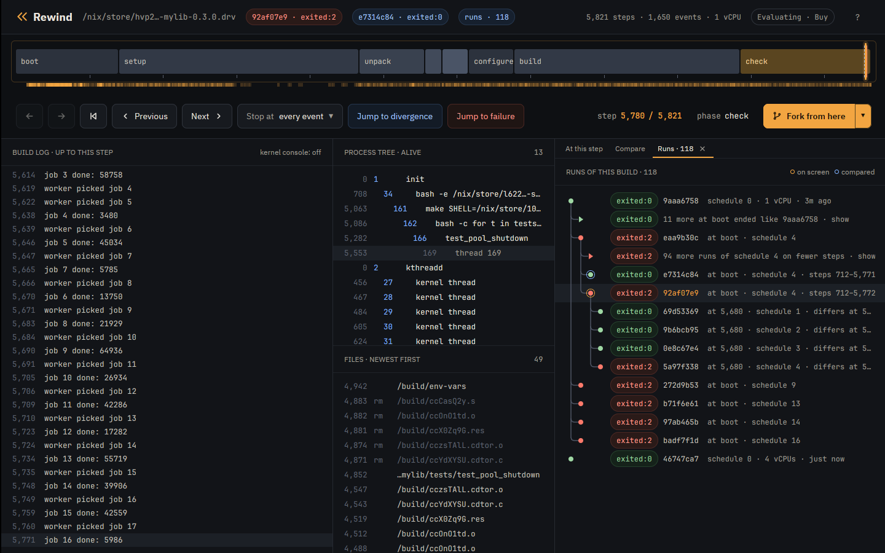
Fork from here forks the run at the playhead with the next schedule. Clicking a run opens it compared with the run it hangs under; right-clicking offers more.
Find a run again
A command takes a run by its id or a prefix of it, by @ for the newest run
and @2, @3 and on for the ones before it, by name, or by
directory. rewind ls lists runs newest first, and filters them:
$ rewind ls -n 3
0a4ce7364cefcfb8 exited:0 6510 steps mylib-0.3.0 (fork of 455a57d2ee648d59 at 4682, schedule 4)
a45917fe369b66a1 exited:2 5160 steps mylib-0.3.0 (fork of 455a57d2ee648d59 at 4682, schedule 3)
cde108b86a46417a exited:0 6517 steps mylib-0.3.0 (fork of 455a57d2ee648d59 at 4682, schedule 2)
$ rewind ls --forks-of 455a57d2 --status failed
a45917fe369b66a1 exited:2 5160 steps mylib-0.3.0 (fork of 455a57d2ee648d59 at 4682, schedule 3)
506727344a509ca5 exited:2 4838 steps mylib-0.3.0 (fork of 455a57d2ee648d59 at 4682, schedule 1)
--name and --since (30m, 2h,
7d or a date) filter too.
rewind open starts the app on a run, at a step and beside another run.
check and fork print the command that opens what they made:
$ rewind open 455a57d2 4782 --compare bcdb4788Rebuild a run exactly
A run's id is the hash of its inputs, which its manifest.json lists, so the
same command follows the same run on a machine with the same CPU vendor and guest.
rewind show prints that command with every input spelled out, including the
epoch, which defaults to the start of the day the run was made. For a fork it prints its
parents' commands first. @, the newest run, is the schedule 4 fork:
$ rewind show @
0a4ce7364cefcfb8 exited:0 6510 steps mylib-0.3.0 (fork of 455a57d2ee648d59 at 4682, schedule 4)
...
rewind nix /nix/store/...-mylib-0.3.0.drv --epoch 1790985600 --schedule 1 --schedule-from 4533 --schedule-until 4759 --cpu v3 --clock branches --name mylib-0.3.0 # 455a57d2ee648d59
rewind fork 455a57d2ee648d59 4682 --schedule 4 # 0a4ce7364cefcfb8The failing run's command makes it again, with the same id:
$ rewind show 455a57d2 | tail -1 | sh
...
rewind: run 455a57d2ee648d59 exited:2 after 4823 steps, 0.200s virtual, 0.438s wall (poweroff)Compare any two runs
rewind diff compares every event of two runs, where
check compares only the failing program's:
$ rewind diff bcdb4788 455a57d2
first difference at event 1665: step 4759 on the left, step 4770 on the right
both 4746 166/172 write(1, "job 15 done: 42559\n")
both 4747 166/172 write(1, "worker picked job 17\n")
both 4758 166/171 write(1, "job 16 done: 5986\n")
left 4759 166/171 write(1, "worker picked job 18\n")
left 4771 166/172 thread exit(test_pool_shutd) exited:0
left 4775 166/171 thread exit(test_pool_shutd) exited:0
left 4778 166/166 write(1, "round 2: ok\n")
right 4770 166/172 thread exit(test_pool_shutd) exited:0
right 4780 0/0 console "[ 0.199340] test_pool_shutd[171]: segfault at 108 ip 000055c06fa1d437 sp 00007fda39950e10 error 6 in test_pool_shutdown[1437,55c06fa1d000+1000] likely on CPU 0 (core 0, socket 0)"
right 4781 0/0 console "[ 0.199345] Code: fa 48 8d 35 2a 0c 00 00 bf 02 00 00 00 b8 00 00 00 00 e8 ac fc ff ff 48 8b 05 b5 2b 00 00 48 8b 38 e8 8d fc ff ff 49 8b 46 58 <83> 80 08 01 00 00 01 e9 b5 fe ff ff 55 48 89 e5 41 54 53 be 78 00"
right 4782 166/171 SIGSEGV code=1 addr=0x108In the app, any run compared with another shows where they part, on the timeline and in the divergence card:
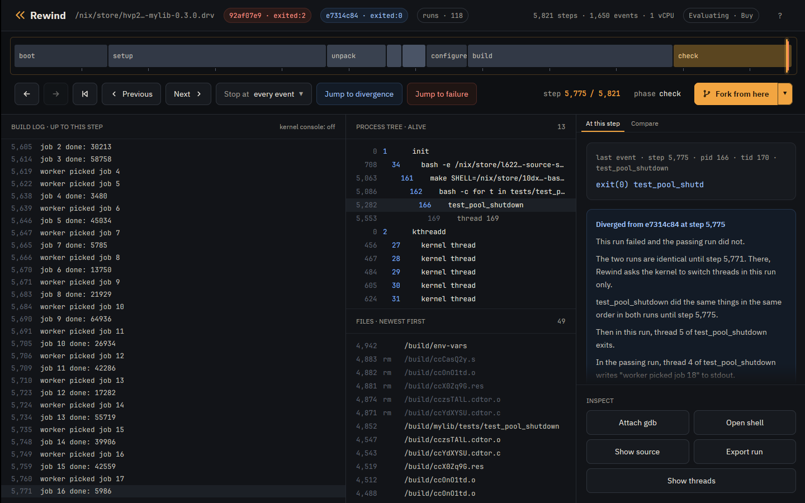
The card's Compare side by side link opens the Compare tab: the last events both runs shared, then each run's next events side by side, with what differs in amber. The x key swaps to the other run at the matching step, and x again comes back:
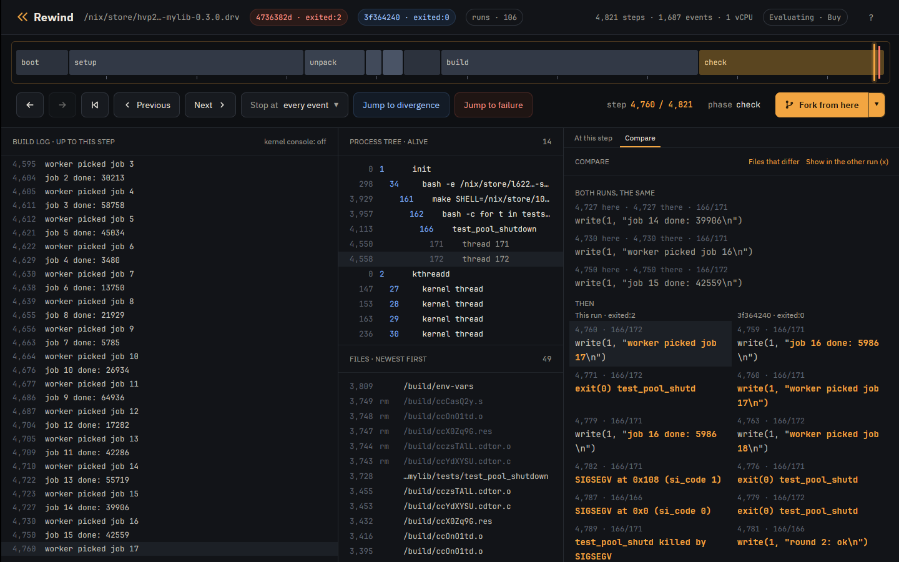
Script it
run, nix and fork exit with the job's status, as a
shell would report it, so a shell loop can ask which schedules fail from a step:
$ for s in 5 6 7 8; do rewind fork 455a57d2 4682 --schedule $s --quiet 2>/dev/null; echo "schedule $s: exit $?"; done
schedule 5: exit 0
schedule 6: exit 0
schedule 7: exit 0
schedule 8: exit 0The other commands answer a question with their exit status:
| Command | 0 | 1 | 3 | 4 |
|---|---|---|---|---|
check |
no run fails a property | a run fails one, by default by ending differently from schedule 0 | ||
diff, replay, blame |
the runs are identical | they differ | ||
doctor |
this machine can record | it cannot | ||
cat |
the file was printed | no such file at the step | the path named a directory (--archive tar writes it) |
|
files |
the directory was listed | no such directory at the step | the path named something other than a directory |
Every command exits 2 when it could not do what was asked, as for a run that does not
exist, so rewind diff a b || report_flaky reports only runs that differ. With
--json, commands print JSON for a program to read in place of their text: one
object, or from ls and events one a line.
check --json lists each run it tried under schedules, with the
properties the run violated under violations.
$ rewind ls --forks-of 455a57d2 --status failed --json | jq -r .id
a45917fe369b66a1
506727344a509ca5
$ rewind diff bcdb4788 455a57d2 --json | jq -c '.divergence | {left_step, right_step}'
{"left_step":4759,"right_step":4770}Give a run to an agent
rewind summary prints a run as plain text: the verdict and every reason it
failed, how it ended, the failing step with its process and thread, the last 20 lines of
output, and with --compare, the step where two runs part and what each did
there. It exits 0 for a passed run, 1 for a failed one and 2 when it could not read the
run. A coding agent or a CI job can read a failure from it without the app, and every
export carries the same text as summary.txt.
$ rewind summary 455a57d2 --compare bcdb4788
run 455a57d2ee648d59: mylib-0.3.0
verdict: failed
exited with status 2
ended: exited:2 at step 4823 (poweroff)
failing step: 4782, in process 166 (test_pool_shutdown), thread 171: SIGSEGV delivered, fault address 0x108
output (the last 20 of 141 lines):
...
compared with run bcdb4788ffc5bce2: mylib-0.3.0
verdict: passed
ended: exited:0 at step 6095 (poweroff)
the runs part at step 4770 here and step 4759 there, in the events of ./tests/test_pool_shutdown
here: process 166 (test_pool_shutdown), thread 172: thread exit(test_pool_shutd) exited:0
there: process 166 (test_pool_shutdown), thread 171: write(1, "worker picked job 18\n")Judge runs by properties
By default check fails a run that ends differently from schedule 0.
--property replaces that test with others, such as no-crash or
single-writer=GLOB, and can be repeated.
rewind check --help lists the built-in properties, and the
properties tutorial explains each one.
A program that calls the
Rewind SDK asserts from
the inside: always must hold every time it runs, and
sometimes must hold in at least one run. Check adds the
sdk property when schedule 0 calls the SDK, and the app marks each failed
assertion in red above the track.
A property can also be a script. It gets the run in $REWIND_RUN, can read it
with rewind log, rewind events --json or
rewind cat, and exits 0 when the run is correct or 1 with the reason on its
first line. This one checks that bank's deposits add up:
$ cat adds-up.sh
#!/bin/sh
# The deposits add up: bank prints its balance and what it expected.
line=$(rewind log "$REWIND_RUN" | grep "^balance ")
test "$line" = "balance 400, expected 400" && exit 0
echo "$line"
exit 1$ rewind check --epoch 1790985600 --property script=./adds-up.sh github:fzakaria/rewindvm#bank | grep -E 'decides it|failing run violates adds-up'
rewind: packing 62 store paths for bank-0.1.0
schedule 1 violates adds-up, sdk; finding the step that decides it
step 3360 decides it: a request to switch threads there makes the run violate adds-up, sdk
failing run violates adds-up: balance 360, expected 400
--properties reads properties from a file, one a line, so a repository can
keep them beside its tests. A script's path in the file is relative to the file's
directory:
$ cat rewind.properties
# What a correct bank run is.
no-crash
script=adds-up.sh
$ rewind check --epoch 1790985600 --properties rewind.properties github:fzakaria/rewindvm#bank | grep 'decides it'
schedule 1 violates adds-up, sdk; finding the step that decides it
step 3360 decides it: a request to switch threads there makes the run violate adds-up, sdkCount the schedules that fail from a step
rewind fork tries one schedule from a step. check --run tries
many, each a fork at --schedule-from, with the run itself as schedule 0.
--no-narrow stops at the count. From the deciding step of the passing run:
$ rewind check --run bcdb4788 --schedule-from 4758 --schedules 16 --all --no-narrow
schedule 0: exited:0 6095 steps a9d703ba8977 run bcdb4788ffc5bce2
schedule 1: exited:2 4838 steps run 656900a581a72e91
schedule 2: exited:0 6481 steps a9d703ba8977 run 931e1a8f99d31c0b
schedule 3: exited:0 6610 steps a9d703ba8977 run d3e7028766f0a633
schedule 4: exited:0 6491 steps a9d703ba8977 run ef8e836a4f161077
schedule 5: exited:0 6503 steps a9d703ba8977 run 79467f841ecd4956
schedule 6: exited:0 6560 steps a9d703ba8977 run c4731dc6391b0823
schedule 7: exited:2 5126 steps run 5ff4f4d63e06112e
schedule 8: exited:0 6646 steps a9d703ba8977 run 4bfa87f675a6ee2b
schedule 9: exited:0 6544 steps a9d703ba8977 run 73eb93e028c68b16
schedule 10: exited:0 6553 steps a9d703ba8977 run 143afa40dd68f842
schedule 11: exited:0 6552 steps a9d703ba8977 run 32bff51d2f0bccf8
schedule 12: exited:2 4829 steps run 7aeb91a57bed7298
schedule 13: exited:0 6579 steps a9d703ba8977 run 229c386faaa79a47
schedule 14: exited:0 6617 steps a9d703ba8977 run 5ac94b5cb9431093
schedule 15: exited:0 6673 steps a9d703ba8977 run 26797e0adc61100d
schedule 16: exited:0 6575 steps a9d703ba8977 run f9b6fa5b88a51da0
3 of 16 other schedules ended differently
3 of the 16 crash. Without --no-narrow, check --run narrows the
first of them to the step that decides it, as for a build.
In the app, the chevron beside Fork from here turns it into Check from here, which runs the schedules from the playhead and fills a cell per schedule: grey for ended as this run did, blue for differently. Pick a cell to compare with or open its run:
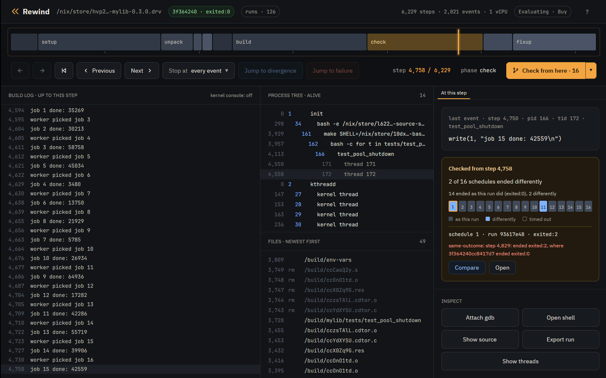
Hold a task off the CPU for longer
A stall holds the running task off the CPU for at most 1.28 ms. A race whose window includes a sleep, a timer or slow I/O in another task needs a longer hold. This program gives eight threads 20 ms to start, built static:
$ printf '#include <pthread.h>\n#include <stdio.h>\n#include <time.h>\n#include <unistd.h>\nvolatile int ready[8];\nvoid *work(void *i) { write(1, "started\\n", 8); ready[(long)i] = 1; return 0; }\nint main(void) {\n pthread_t t[8];\n for (long i = 0; i < 8; i++) pthread_create(&t[i], 0, work, (void *)i);\n nanosleep(&(struct timespec){0, 20000000}, 0); /* 20 ms to start */\n for (int i = 0; i < 8; i++) if (!ready[i]) { printf("worker %%d not ready\\n", i); return 1; }\n puts("every worker ready");\n}\n' > ready.c
$ mkdir -p ready/bin
$ nix shell nixpkgs#pkgsStatic.stdenv.cc -c x86_64-unknown-linux-musl-cc -static -o ready/bin/ready ready.cNo schedule stalls a thread for 20 ms by default:
$ rewind check --root ready --schedules 64 --all --no-narrow -- /bin/ready
...
same result under all 65 schedules
--stall-max on run, nix, check and
fork raises the longest stall, up to 1 s:
$ rewind check --root ready --stall-max 50ms -- /bin/ready | grep -E 'ends differently|limited to|decides it|passing:|failing:'
schedule 7 ends differently from schedule 0; finding the step that decides it
schedule 7 limited to steps 712..781 still ends differently
step 780 decides it: a request to switch threads and a 20.48 ms pause of the running thread there makes the run fail
passing: run a1ff471bf219468b, schedule 7 over steps 712..780, stalls up to 50 ms
failing: run e5c795fcb8126ca0, schedule 7 over steps 712..781, stalls up to 50 ms
The same steps stall, one step in 128, but each stall picks one of the doublings of 10 µs
up to the maximum, 14 of them for 50 ms, so fewer stalls are short. How often a race turns
up then depends on how long it needs a thread held: 32 schedules of mylib crash 8 times by
default and 5 times with --stall-max 100ms, in 4.9 s and 5.1 s. A stall is
virtual time, so the guest's clock moves further, and a program's own timeouts see the
extra time. The maximum is part of each run's spec, so rewind show, a replay
and a fork of the run keep the maximum, and a run made without the flag keeps its id. A
fork's own schedule takes the default unless it is given --stall-max too.
Try other seeds from a step
A fork keeps its parent's randomness unless you reseed it.
rewind fork --seed reseeds the VM's randomness at the fork's step.
check --run --seeds tries the run's own seed and several others, each a fork
of the run reseeded at --schedule-from. hash-order's test
depends on the order of a Rust HashSet, which Rust draws from that
randomness:
$ rewind nix -q --epoch 1790985600 --name hash-order github:fzakaria/rewindvm#hash-order
...
/nix/store/8fzgvvjf4iffwijx3njlhg40m0xxnlw4-hash-order-0.1.0 83f239c2e3135166 not in your store or 6 caches$ rewind check --run hash-order --seeds 8 --schedules 0 | grep -E 'decides it|passing:|failing:'
seed 2 decides it: under schedule 0, seed 0 passes and seed 2 fails
passing: run fdb78956486983d5, seed 0, schedule 0
failing: run 58337e58e8202567, seed 2 from step 710, schedule 0List directories in another order
Inside the VM a directory lists its entries in the same order in every run, so a build
that depends on that order never differs there. On a real machine, ext4 lists a directory
in an order set when the disk was formatted. The kernel argument
rewind.dirents=N lists every directory the build sees in the order of a hash
of each name keyed by N, as another ext4 disk would; 0 keeps the usual order. The key is
part of the run, so a run made with one replays:
$ rewind nix --kernel-args rewind.dirents=2 github:fzakaria/rewindvm#mylib
rewind check --dirents 3 builds under keys 1 to 3 besides the stock order, a
line each, and reports the first key whose build ends differently;
rewind diff --outputs shows what it changed. setuptools 80.9.0 builds a wheel
that names its own version as 1.0 under key 2, because it reads its version
from whichever .egg-info directory lists first.
Directory order
in the design notes says how the kernel does it.
Move around a long run
Builds of larger projects run to hundreds of thousands of steps. The app has keys to jump to a step, step between events of one kind, bookmark, search and zoom the timeline. The ? key lists them all:
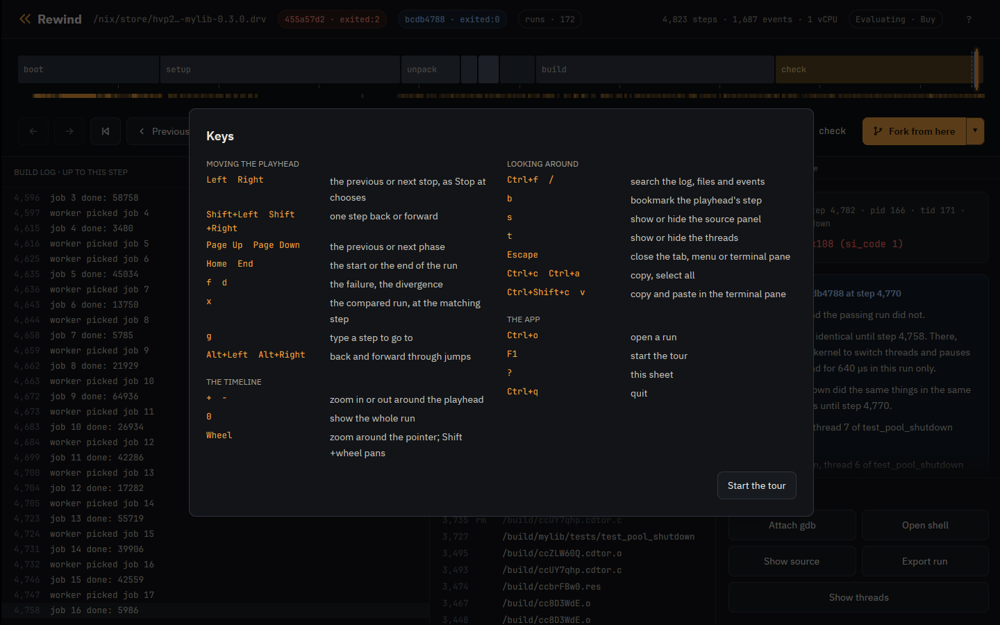
Hand a failure to someone else
$ rewind export 455a57d2 --replayable -o crash.rwd
rewind: wrote crash.rwd (194.6 MB)
$ REWIND_HOME=elsewhere rewind import crash.rwd
455a57d2ee648d59 exited:2 4823 steps mylib-0.3.0
$ REWIND_HOME=elsewhere rewind replay 455a57d2
identical to the recording: 1687 events, 1114 context switches and 1476 read and write records over 4823 steps, and the whole machine at its 9 keyframes
A replayable export carries the keyframes, the image and the VM's kernel, and replays on
any machine with the same CPU vendor. Without --replayable it is the events
alone, 25.6 KB: enough to read and to scrub in the app, whose Export button writes the
replayable kind. Both kinds carry the run's bookmarks, and summary.txt, the
run in plain text as rewind summary prints it: the verdict, the failing step
and the last lines of output. With --with-answers, an export also carries
where each thread was and the files the job had written at the failing step, at each
broken assertion and at each bookmark, which the browser viewer shows without a machine to
replay on.
The other machine also needs the features of the run's CPU model. A run without
--cpu gets v3, whose features include ERMS, the fast
rep movsb flag. On a host that lacks only ERMS it gets
v3-compat instead, the same CPU with ERMS hidden, and rewind prints a line
saying so. A v3 run needs a host with ERMS, and a v3-compat run
replays on hosts with or without it. A replay on a host without the model's features names
what is missing and where the run replays, and rewind doctor says which model
a run gets on a machine.
Which clock
$ rewind pmu status
cpu: AMD Zen (family 25)
amd workaround (MSR 0xc0011020 bit 54): set by `rewind pmu enable` this boot
perf_event_paranoid: 2
probe branches: 3000000 branches, as built
probe locked: 2000000 branches, as built
probe not-branches: 1000000 branches, as built
probe exits: 8192 branches, as built
self-test: 58071967 and 58071967 branches, exact at every step
runs will use counter time
With counter time the VM's clock follows the work done inside it; with exit time
computation takes no virtual time. --clock picks one.
Counter time explains.
rewind doctor checks the clock with KVM, gdb and the rest of what rewind
uses, and says what to do about each problem.
Find where a run hung
A thread gives up the VM's one CPU only at a step, so a loop that makes no system call
keeps it, and the run hangs. --timeout stops a run after that many seconds on
your machine. When the guest had gone a second or more without an exit, rewind says where
it was stuck. A program that spins, built static with its symbols:
$ printf 'volatile unsigned long n;\nint main(void) { for (;;) n++; }\n' > spin.c
$ mkdir -p spin/bin
$ nix shell nixpkgs#pkgsStatic.stdenv.cc -c x86_64-unknown-linux-musl-cc -static -g -o spin/bin/spin spin.c$ rewind run --root spin --timeout 5 --name spin -- /bin/spin
rewind: run 3af40803d28d6ebe timed-out after 719 steps, 0.004s virtual, 5.011s wall (timed out computing without exits for 4.9s, in user space in main+15 (spin.c:2), process 34 (spin))
A run that timed out while still making exits was slow rather than stuck, and says so.
rewind check gives each perturbed schedule ten times as long as schedule 0
took, at least a minute, and reports a stuck schedule the same way. Schedule 0 itself has
no limit, since a long build is no reason to stop it, so a test suite that hangs there
holds up the whole check. Give such a suite rewind check --timeout, which
bounds every schedule, schedule 0 included. --status timed-out lists the runs
that timed out:
$ rewind ls --status timed-out
3af40803d28d6ebe timed-out 719 steps spinKeep the run directory tidy
Runs live under ~/.local/share/rewind, or REWIND_HOME:
$ REWIND_HOME=elsewhere rewind ls
cde108b86a46417a exited:0 6517 steps mylib-0.3.0 (fork of 455a57d2ee648d59 at 4682, schedule 2)
506727344a509ca5 exited:2 4838 steps mylib-0.3.0 (fork of 455a57d2ee648d59 at 4682, schedule 1)
455a57d2ee648d59 exited:2 4823 steps mylib-0.3.0
$ REWIND_HOME=elsewhere rewind remove cde108b8
removed cde108b86a46417a
rewind: `rewind gc` removes the pages no run uses any more
remove takes a run with every run forked from it. To remove every fork and
keep the runs they came from, run
rewind ls | awk '/fork of/ {print $1}' | xargs rewind remove.
prune --identical removes forks that ran exactly as an older one did.
What to read next
- Design: how the machine is made deterministic, and its limits.
- The case studies: these tools on bugs in real projects.
The engine is free and MIT licensed. The desktop app is $49 personal or $99 per seat.